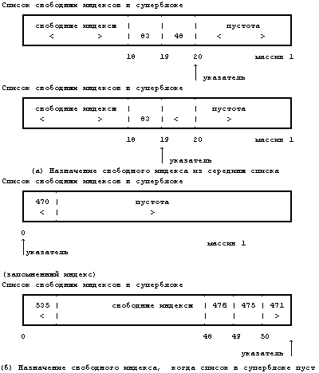
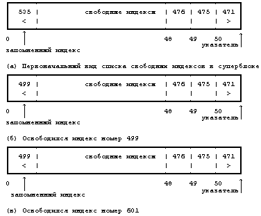
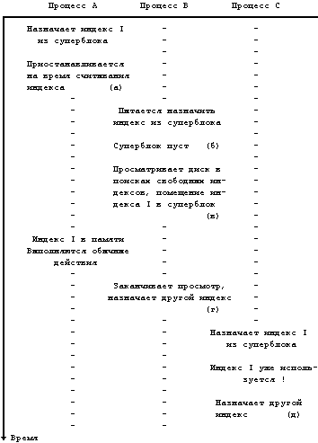
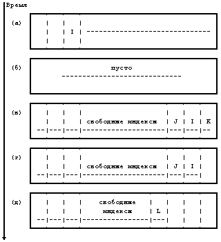

Для выделения известного индекса, то есть индекса, для которого предварительно определен собственный номер (и номер файловой системы), ядро использует алгоритм iget. В алгоритме namei, например, ядро определяет номер индекса, устанавливая соответствие между компонентой имени пути поиска и именем в каталоге. Другой алгоритм, ialloc, выполняет назначение дискового индекса вновь создаваемому файлу.
Как уже говорилось в главе 2, в файловой системе имеется линейный список индексов. Индекс считается свободным, если поле его типа хранит нулевое значение. Если процессу понадобился новый индекс, ядро теоретически могло бы произвести поиск свободного индекса в списке индексов. Однако, такой поиск обошелся бы дорого, поскольку потребовал бы по меньшей мере одну операцию чтения (допустим, с диска) на каждый индекс. Для повышения производительности в суперблоке файловой системы хранится массив номеров свободных индексов в файловой системе.
алгоритм ialloc /* выделение индекса */
входная информация: файловая система
выходная информация: заблокированный индекс
{
выполнить
{
если (суперблок заблокирован)
{
приостановиться (пока суперблок не освободится);
продолжить; /* цикл с условием продолжения */
}
если (список индексов в суперблоке пуст)
{
заблокировать суперблок;
выбрать запомненный индекс для поиска свободных
индексов;
искать на диске свободные индексы до тех пор, пока
суперблок не заполнится, или пока не будут най-
дены все свободные индексы (алгоритмы bread и
brelse);
снять блокировку с суперблока;
возобновить выполнение процесса (как только супер-
блок освободится);
если (на диске отсутствуют свободные индексы)
возвратить (нет индексов);
запомнить индекс с наибольшим номером среди най-
денных для последующих поисков свободных индек-
сов;
}
/* список индексов в суперблоке не пуст */
выбрать номер индекса из списка индексов в супербло-
ке;
получить индекс (алгоритм iget);
если (индекс после всего этого не свободен) /* !!! */
{
переписать индекс на диск;
освободить индекс (алгоритм iput);
продолжить; /* цикл с условием продолжения */
}
/* индекс свободен */
инициализировать индекс;
переписать индекс на диск;
уменьшить счетчик свободных индексов в файловой сис-
теме;
возвратить (индекс);
}
}
|
Рисунок 4.12. Алгоритм назначения новых индексов
На Рисунке 4.12 приведен алгоритм ialloc назначения новых индексов. По причинам, о которых пойдет речь ниже, ядро сначала проверяет, не заблокировал ли какой-либо процесс своим обращением список свободных индексов в суперблоке. Если список номеров индексов в суперблоке не пуст, ядро назначает номер следующего индекса, выделяет для вновь назначенного дискового индекса свободный индекс в памяти, используя алгоритм iget (читая индекс с диска, если необходимо), копирует дисковый индекс в память, инициализирует поля в индексе и возвращает индекс заблокированным. Затем ядро корректирует дисковый индекс, указывая, что к индексу произошло обращение. Ненулевое значение поля типа файла говорит о том, что дисковый индекс назначен. В простейшем случае с индексом все в порядке, но в условиях конкуренции делается необходимым проведение дополнительных проверок, на чем мы еще кратко остановимся. Грубо говоря, конкуренция возникает, когда несколько процессов вносят изменения в общие информационные структуры, так что результат зависит от очередности выполнения процессов, пусть даже все процессы будут подчиняться протоколу блокировки. Здесь предполагается, например, что процесс мог бы получить уже используемый индекс. Конкуренция связана с проблемой взаимного исключения, описанной в главе 2, с одним замечанием: различные схемы блокировки решают проблему взаимного исключения, но не могут сами по себе решить все проблемы конкуренции.
Если список свободных индексов в суперблоке пуст, ядро просматривает диск и помещает в суперблок как можно больше номеров свободных индексов. При этом ядро блок за блоком считывает индексы с диска и наполняет список номеров индексов в суперблоке до отказа, запоминая индекс с номером, наибольшим среди найденных. Назовем этот индекс "запомненным"; это последний индекс, записанный в суперблок. В следующий раз, когда ядро будет искать на диске свободные индексы, оно использует запомненный индекс в качестве стартовой точки, благодаря чему гарантируется, что ядру не придется зря тратить время на считывание дисковых блоков, в которых свободные индексы наверняка отсутствуют. После формирования нового набора номеров свободных индексов ядро запускает алгоритм назначения индекса с самого начала. Всякий раз, когда ядро назначает дисковый индекс, оно уменьшает значение счетчика свободных индексов, записанное в суперблоке.
Рассмотрим две пары массивов номеров свободных индексов (Рисунок 4.13). Если список свободных индексов в суперблоке имеет вид первого массива на Рисунке 4.13(а) при назначении индекса ядром, то значение указателя на следующий номер индекса уменьшается до 18 и выбирается индекс с номером 48. Если же список выглядит как первый массив на Рисунке 4.13(б), ядро заметит, что массив пуст и обратится в поисках свободных индексов к диску, при этом поиск будет производиться, начиная с индекса с номером 470, который был ранее запомнен. Когда ядро заполнит список свободных индексов в суперблоке до отказа, оно запомнит последний индекс в качестве начальной точки для последующих просмотров диска. Ядро производит назначение файлу только что выбранного с диска индекса (под номером 471 на рисунке) и продолжает прерванную обработку.

Рисунок 4.13. Два массива номеров свободных индексов
алгоритм ifree /* освобождение индекса */
входная информация: номер индекса в файловой системе
выходная информация: отсутствует
{
увеличить на 1 счетчик свободных индексов в файловой
системе;
если (суперблок заблокирован)
возвратить управление;
если (список индексов заполнен)
{
если (номер индекса меньше номера индекса, запом-
ненного для последующего просмотра)
запомнить для последующего просмотра номер
введенного индекса;
}
в противном случае
сохранить номер индекса в списке индексов;
возвратить управление;
}
|
Рисунок 4.14. Алгоритм освобождения индекса
Алгоритм освобождения индекса построен значительно проще. Увеличив на единицу общее количество доступных в файловой системе индексов, ядро проверяет наличие блокировки у суперблока. Если он заблокирован, ядро, чтобы предотвратить конкуренцию, немедленно сообщает: номер индекса отсутствует в суперблоке, но индекс может быть найден на диске и доступен для переназначения. Если список не заблокирован, ядро проверяет, имеется ли место для новых номеров индексов и если да, помещает номер индекса в список и выходит из алгоритма. Если список полон, ядро не сможет в нем сохранить вновь освобожденный индекс. Оно сравнивает номер освобожденного индекса с номером запомненного индекса. Если номер освобожденного индекса меньше номера запомненного, ядро запоминает номер вновь освобожденного индекса, выбрасывая из суперблока номер старого запомненного индекса. Индекс не теряется, поскольку ядро может найти его, просматривая список индексов на диске. Ядро поддерживает структуру списка в суперблоке таким образом, что последний номер, выбираемый им из списка, и есть номер запомненного индекса. В идеале не должно быть свободных индексов с номерами, меньшими, чем номер запомненного индекса, но возможны и исключения.
Рассмотрим два примера освобождения индексов. Если в списке свободных индексов в суперблоке еще есть место для новых номеров свободных индексов (как на Рисунке 4.13(а)), ядро помещает в список новый номер, переставляет указатель на следующий свободный индекс и продолжает выполнение процесса. Но если список свободных индексов заполнен (Рисунок 4.15), ядро сравнивает номер освобожденного индекса с номером запомненного индекса, с которого начнется просмотр диска в следующий раз. Если вначале список свободных индексов имел вид, как на Рисунке 4.15(а), то когда ядро освобождает индекс с номером 499, оно запоминает его и выталкивает номер 535 из списка. Если затем ядро освобождает индекс с номером 601, содержимое списка свободных индексов не изменится. Когда позднее ядро использует все индексы из списка свободных индексов в суперблоке, оно обратится в поисках свободных индексов к диску, при этом, начав просмотр с индекса с номером 499, оно снова обнаружит индексы 535 и 601.

Рисунок 4.15. Размещение номеров свободных индексов в суперблоке

Рисунок 4.16. Конкуренция в назначении индексов
В предыдущем параграфе описывались простые случаи работы алгоритмов. Теперь рассмотрим случай, когда ядро назначает новый индекс и затем копирует его в память. В алгоритме предполагается, что ядро может и обнаружить, что индекс уже назначен. Несмотря на редкость такой ситуации, обсудим этот случай (с помощью Рисунков 4.16 и 4.17). Пусть у нас есть три процесса, A, B и C, и пусть ядро, действуя от имени процесса A (***), назначает индекс I, но приостанавливает выполнение процесса перед тем, как скопировать дисковый индекс в память. Алгоритмы iget (вызванный алгоритмом ialloc) и bread (вызванный алгоритмом iget) дают процессу A достаточно возможностей для приостановления своей работы. Предположим, что пока процесс A приостановлен, процесс B пытается назначить новый индекс, но обнаруживает, что список свободных индексов в суперблоке пуст. Процесс B просматривает диск в поисках свободных индексов, и начинает это делать с индекса, имеющего меньший номер по сравнению с индексом, назначенным процессом A. Возможно, что процесс B обнаружит индекс I на диске свободным, так как процесс A все еще приостановлен, а ядро еще не знает, что этот индекс собираются назначить. Процесс B, не осознавая опасности, заканчивает просмотр диска, заполняет суперблок свободными (предположительно) индексами, назначает индекс и уходит со сцены. Однако, индекс I остается в списке номеров свободных индексов в суперблоке. Когда процесс A возобновляет выполнение, он заканчивает назначение индекса I. Теперь допустим, что процесс C затем затребовал индекс и случайно выбрал индекс I из списка в суперблоке. Когда он обратится к копии индекса в памяти, он обнаружит из установки типа файла, что индекс уже назначен. Ядро проверяет это условие и, обнаружив, что этот индекс назначен, пытается назначить другой. Немедленная перепись скорректированного индекса на диск после его назначения в соответствии с алгоритмом ialloc снижает опасность конкуренции, поскольку поле типа файла будет содержать пометку о том, что индекс использован.

Рисунок 4.17. Конкуренция в назначении индексов (продолжение)
Блокировка списка индексов в суперблоке при чтении с диска устраняет другие возможности для конкуренции. Если суперблок не заблокирован, процесс может обнаружить, что он пуст, и попытаться заполнить его с диска, время от времени приостанавливая свое выполнение до завершения операции ввода-вывода. Предположим, что второй процесс так же пытается назначить новый индекс и обнаруживает, что список пуст. Он тоже попытается заполнить список с диска. В лучшем случае, оба процесса продублируют друг друга и потратят энергию центрального процессора. В худшем, участится конкуренция, подобная той, которая описана в предыдущем параграфе. Сходным образом, если процесс, освобождая индекс, не проверил наличие блокировки списка, он может затереть номера индексов уже в списке свободных индексов, пока другой процесс будет заполнять этот список информацией с диска. И опять участится конкуренция вышеописанного типа. Несмотря на то, что ядро более или менее удачно управляется с ней, производительность системы снижается. Установка блокировки для списка свободных индексов в суперблоке устраняет такую конкуренцию.
(***) Как и в предыдущей главе, здесь под "процессом" имеется ввиду "ядро, действующее от имени процесса".
Предыдущая глава || Оглавление || Следующая глава